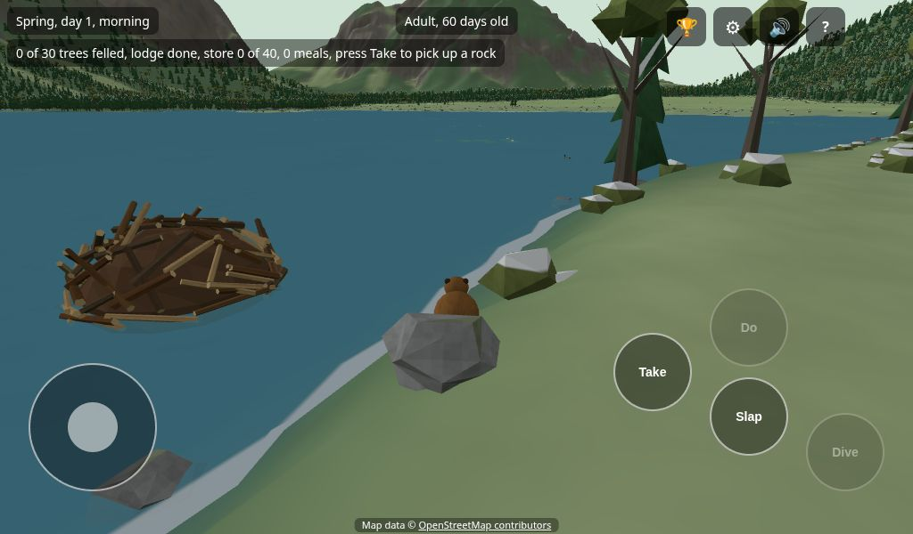
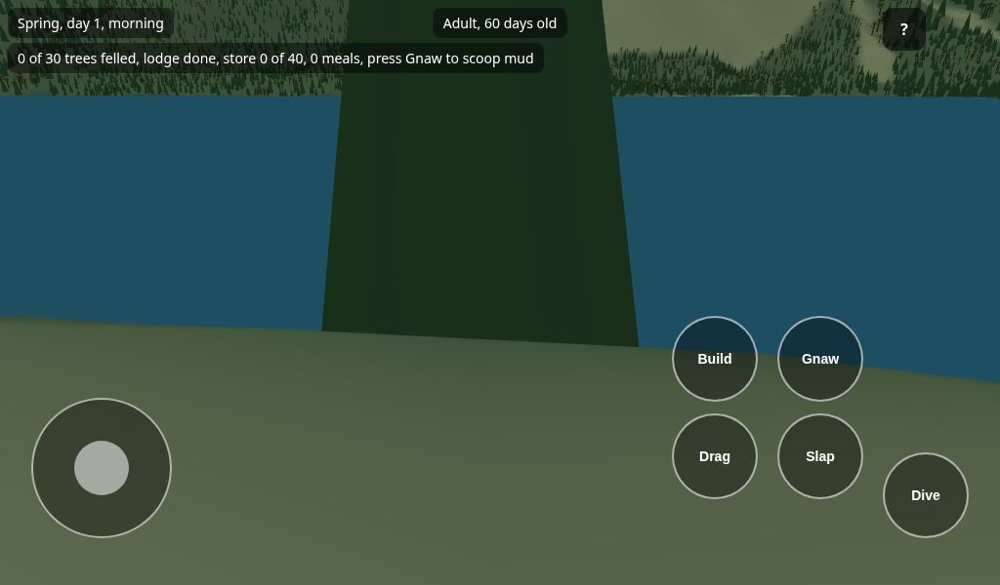
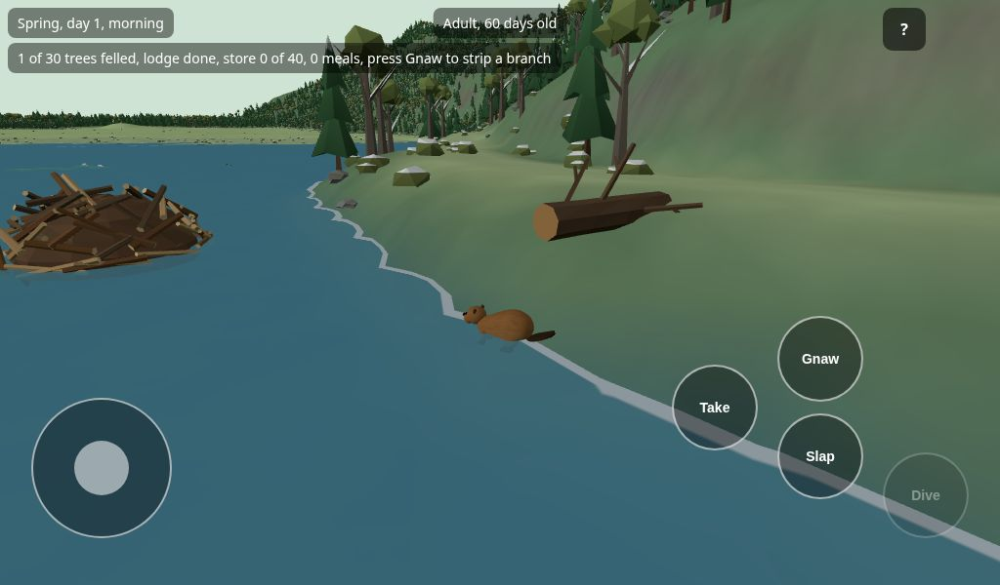
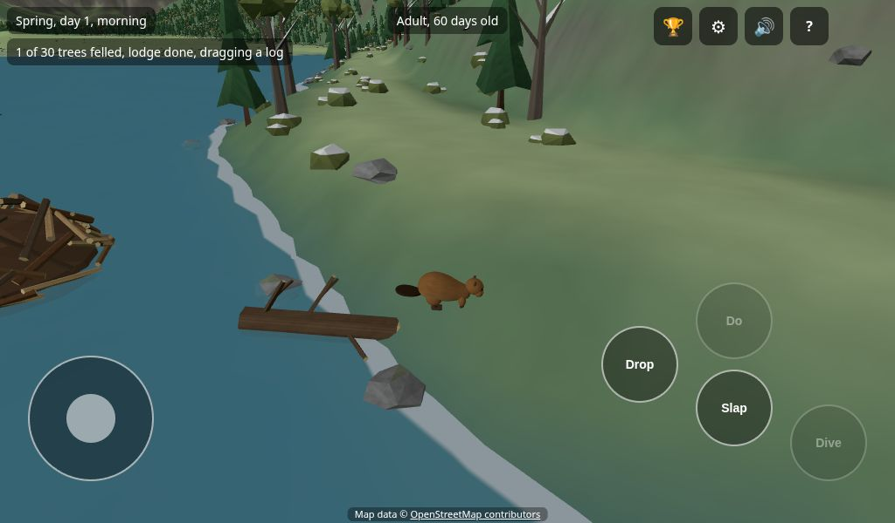
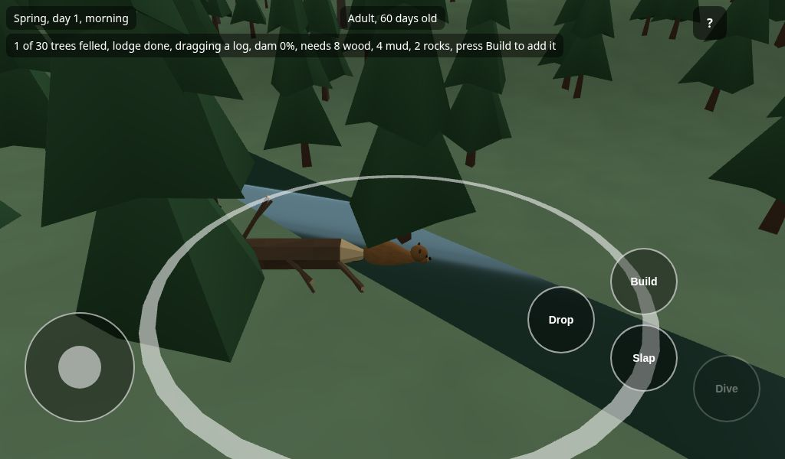
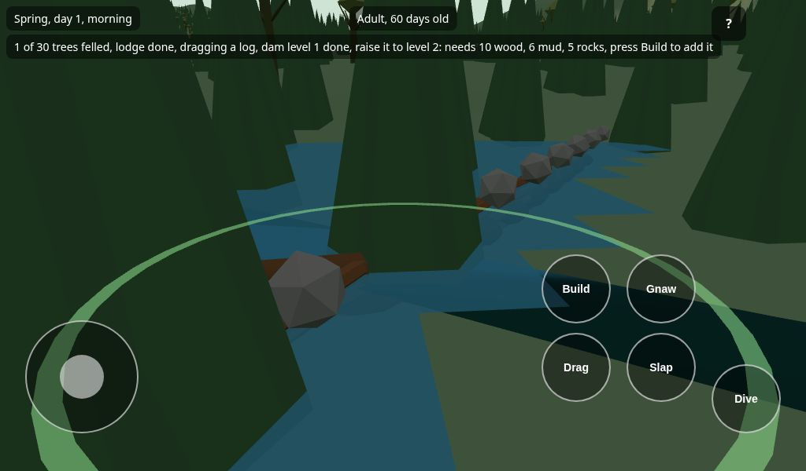

You are a beaver in a real valley in Austria. Nothing can hurt you and you cannot lose. There is no hurry. Look around and build something!
Your first day
You start as a baby beaver, at home in the lodge with Mama and Papa. The little card at the top left shows what to do. Its buttons are Back, Next and Close.
Swim out. Walk to the water hole in the floor and press Dive (Space).
Swim and dive. Hold Dive (Space) to go under water.
Slap your tail. Press Slap (T) at the water surface.
Go home and sleep. Dive in at the door, which is under water. Walk to the nest and pick Sleep until teenager.
Now you are a teenager, and you can gnaw, drag and build.
Your first dam
A teenager does these things. First have a snack in the lodge: take a lily pad, carry it in and press Eat (E) to eat it. Put another in the food store by the door. Then, in this order:
Walk and swim
Push the stick to walk. Drag the empty screen to turn the view. Walk into the water to swim.

The stick is on the left. The buttons are on the right. A grey button cannot do anything here.
Gnaw a tree
Walk up to a tree and stand still. Press Gnaw (E) until it falls. Gnaw is the Do button: the word on it changes with what you can do.

Stand close to the tree, and do not move.
Take the log
The tree is now a log. Stand at the log and press Take (G) to hold it in your teeth. Press it again (it now says Drop) to let go.

Carry it to a white ring
Near a stream there is a white ring on the ground. That is a place for a dam. Carry the log into the ring.

Press Build
Stand in the ring and press Build (E). The dam also needs mud and rocks. Read the top left to see what is missing.

The top left tells you what the dam still needs.
Mud and rocks
Stand in the shallows and press Take to scoop mud. Walk up to a rock and press Take to pick it up. Carry it into the ring and press Build.
Watch the pond
When the dam is whole, the water backs up into a pond. Lily pads grow there. Ponds are safe places.

You made a pond! When you are grown up, you will make a lodge of your own.
What do I do now?
Tap a question.
The top left has words. What are they?
They tell you what each button would do right now. For example: press Take to pick a lily pad. When you are not sure, read them.
Nothing happens when I press Take or Do
Stand still. Gnawing does not work while you walk.
Your mouth may be full. You can carry one thing. Press Drop (the Take button) to put it down.
Get closer to the tree, rock, lily pad or mud.
I cannot find a white ring
Walk along a stream. The rings show up when you are close. The little card at the top left says which way the nearest ring is.
The dam wants more
Read the top left. It lists the wood, mud and rocks that are still missing. Bring them one at a time and press Build in the ring.
I cannot build a lodge
Drag a log to shallow water. Face the water and press Build. The top left says what is wrong: too deep, no water in front, or no deep water nearby. Try another place.
I am a baby and cannot do anything
That is on purpose. Babies stay near Mama and Papa. Go inside the lodge and use the sleep buttons to grow up, or just explore near the pond.
I am lost
Look for the lake. The lodge sits at its edge. A grown-up can also use the Test menu to jump to a place.
The game is slow
Close the other apps on the tablet and open the game again. If it is still slow, ask a grown-up.
I closed the game. Is my beaver gone?
No. The game saves by itself every half minute. When you open it again, press Continue. New game starts over and throws the old beaver away, so it asks twice.
The buttons
On a tablet there is a stick at the bottom left and round buttons at the bottom right. On a computer use the keyboard and the mouse. The keys are also listed at the bottom left of the screen (H hides them).
What
Tablet
Computer
Walk and swim
The stick
WASD or the arrow keys
Turn the view
Drag the empty screen
Drag with the mouse
Zoom
Pinch
Mouse wheel
Dive (hold)
Dive
Space
Tail slap
Slap
T
Pick up a log, a lily pad, mud or a rock, or put it down
Take (Drop when you hold something)
G
Do the thing at hand: Gnaw, Build, Mend, Store, Eat, Talk, Dig
Do (the word on it changes)
E
The ? button at the top right opens this page. In here, Show the first steps brings the little card back.
Read more
Tap a title to open it.
Dams and ponds
A dam needs wood, mud and rocks. A long log counts as two pieces of wood. You can carry one thing at a time.
When it is whole, you can go back and make it higher, up to three levels. A higher dam makes a bigger pond. A finished dam can open up the next dam spot nearby.
A green ring is a dam you have started. A gold glowing ring means something is worn and wants mending.
Your lodge
A lodge is made of ten pieces of wood. It sits in the water. Its door is under water: dive at the door to go in.
Inside you can eat, rest on the nest and sleep. To go out, stand at the water hole in the floor and press Dive.
Dams, the lodge and the food store wear out over time. A worn one shows gaps and a gold ring. Stand next to it, bring what the top left asks for and press Mend. If the lodge and the store both need wood, the top left names the worse one first and says the other needs wood too. If you wait too long it breaks, and you build it again. Nobody is hurt.
Food and the store
Lily pads: swim next to one and press Take. They die back in winter and grow back in spring.
Branches: press Gnaw at a fallen log to strip a branch.
Eating: carry the food into the lodge and press Eat. A lily pad makes you swim faster for a minute. A branch fills you up: you gnaw trees faster for a day.
The food store: when the lodge is whole, a food store sits in the water by the door. Swim to it and press Store. Tap a place to move food between the store and your mouth.
The store keeps food for winter. Nothing bad happens if it is empty.
Day, night and sleep
One game day is eight real minutes. There is a dawn, a bright day and a dark night. A season lasts ten days. The valley is green in spring, bright in summer, colourful in autumn and snowy in winter.
In the lodge a panel lets you rest:
Sleep until morning, at night.
Sleep until next season, on the nest.
Sleep until you grow up, for a baby or a teenager.
Dream, at night. See the next part.
Dreaming in candy land
At night in the lodge, press Dream. Your beaver falls asleep and dreams of candy land. It is a new land every night. In the dream your beaver is a marshmallow beaver too, in all the colours of the rainbow.
The path: follow the little path of candy stones. It leads past lollipop trees, cotton candy trees and gumdrop bushes down to a river of chocolate.
Sweets: walk or swim into a sweet to collect it. The count is at the top left. A golden star gives you a sugar rush, so you go extra fast for a moment. The sweets are only for this dream.
Marshmallow beavers: soft beavers in pink, mint, lemon and more. Each has a name. They come to say hello.
Tag: swim up to a marshmallow beaver in the chocolate river and press Play (E). Whoever is it chases the others. Touch someone to make them it. After a minute everyone cheers and sweets rain down.
Hide and seek: walk up to a marshmallow beaver on land and press Play (E). You count to ten while they hide. Listen for a giggle. Walk up to a hiding beaver to find it. Find them all for a shower of sweets.
The buttons are almost the same as in the valley. The stick or WASD walks and swims. Hop (Space) hops on land and leaps out of the chocolate. Splash (T) splashes with your tail.
The dream lasts as long as you like. Press Wake up at the top right to wake. It is morning in the lodge.
Growing up and the next beaver
The game never ends. Each beaver grows up and then a kit takes over.
Baby: stay near the lodge with Mama and Papa. Mama calls you back if you wander. You cannot fell trees or build yet.
Teenager: you can do everything an adult can, and you help at the pond.
Adult: Mama and Papa say it is time for a family of your own.
As an adult, look for a lone beaver. Listen for a tail slap far away, and follow the messages that say which way to go. After a message, soft gold sparkles on the ground point the way for a while. When you swim near it, it slaps its tail and follows you. Build a lodge and a dam in a good place. Your partner moves in when the lodge is whole. Now and then your partner tells you what it sees, such as a good dam spot or lily pads. On the first day of spring after a season together, a kit is born, and you play the kit.
Animals and other beavers
Deer and ducks are shy. Put a lily pad down near one and it will eat it and trust you more. A tail slap makes them jump.
Beaver families live in lodges on other ponds. At first they are shy and keep away. Put a branch or a lily pad down near them and they trust you more. When they trust you, the kits swim over to look. A tail slap scares them. Families talk about you, and news of a kind deed gets around: when you help one family, the others you know trust you a little more too.
Talking: walk up to a beaver, such as Mama, Papa, your partner or a neighbour who trusts you. A line at the bottom says Willow is here, press Talk, for example. Press Talk (the Do button) and it answers. Even a baby can talk to Mama and Papa. You can talk to Mama and Papa inside the lodge too. Talk comes before Gnaw, so by the trees step a little away from the beaver to gnaw. The first time, a beaver tells you its name and its pond. Next time it knows you. Then you can tap a question. What are you doing? tells you what the beaver is busy with. Any news? gets you something true from a beaver who trusts you: where lily pads grow, that a fox is near, or that a dam needs mending. Can I help? gives you a job. A family may ask for a branch or a lily pad put down near them. Mama and Papa tell you what your home needs. You can ask two questions. Tap Bye and the beaver says goodbye. You may also hear a family call to each other.
Stuck in the snow: in winter you may hear someone calling for help. A beaver from a family that knows you is stuck in a snowdrift by its pond. Stand next to the drift, press Dig, and keep still until it is dug out. Then talk to it and tap Show me the way. It leads you to a lone beaver, a free dam spot, or home, and waits if you fall behind.
Otters and kingfishers lead you to lily pads. Follow them. They wait if you fall behind.
Foxes and owls may come for your food or chase you. Slap your tail to scare them away. They can only frighten you, never hurt you. A pond is a safe place.
Other beaver families live in ponds around the valley.
Achievements
Each life has its own list. A message shows when you win one.
Wood: fell 30 trees.
Home: build a lodge of your own.
First dam: finish a dam so the stream holds water.
Higher dam: make a dam as high as the spot allows.
Pioneer: build a dam at a spot that a pond opened up.
Pantry: fill the food store.
Water gardener: pick 20 lily pads.
Handy beaver: mend something worn until it is as good as new.
Hauler: put 30 loads of mud and rock on dams.
A full year: live through all four seasons.
Mate: bring a partner home to live in your lodge.
Kits: have a kit of your own. Then you play the kit.
Guide: dig a stuck beaver out of the snow. It becomes your guide.
Growing up: grow from a baby into a teenager.
Visit home: after you leave home, swim back and talk to Mama or Papa.
Hand down: have a kit while a dam you built is whole. Your kit gets your lodge and your dam.
For grown-ups
The Test menu at the top right is for the author: it speeds up time, jumps to the six places in the valley, and, when the game is opened with ?shadows=1, turns the sun's shadows on or off. They are off by default because the tablet is too slow with them.
The Test menu's Dream now button opens a dream at any time. The address ?dream=1 starts the game in a dream, and ?seed=5 picks which candy land.
The game saves by itself (one game per tablet) and asks to continue it at the start. If the tablet clears the app's data, the save goes with it.
The game starts as a baby in a ready-made lodge. The coach card follows each life stage and starts again when the beaver grows up. Close turns it off. The Test menu can jump to a teenager or an adult.
If a dive runs out of breath, the beaver floats up. Nothing is lost.
The game is a work in progress. Tell the author what confused you. That is how this page gets better.